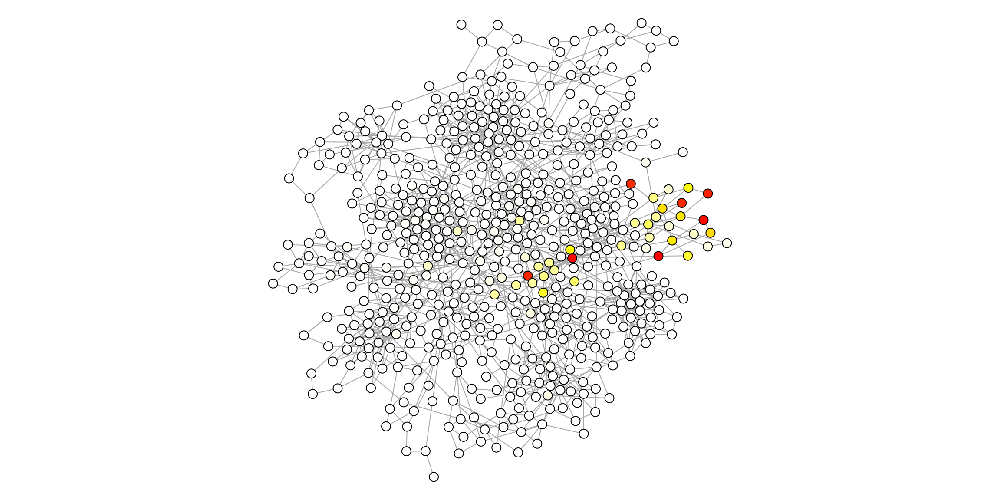
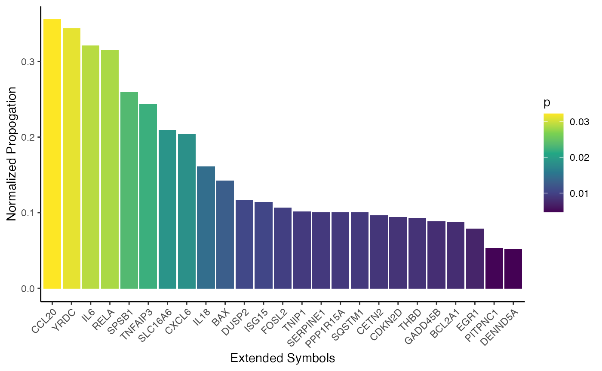
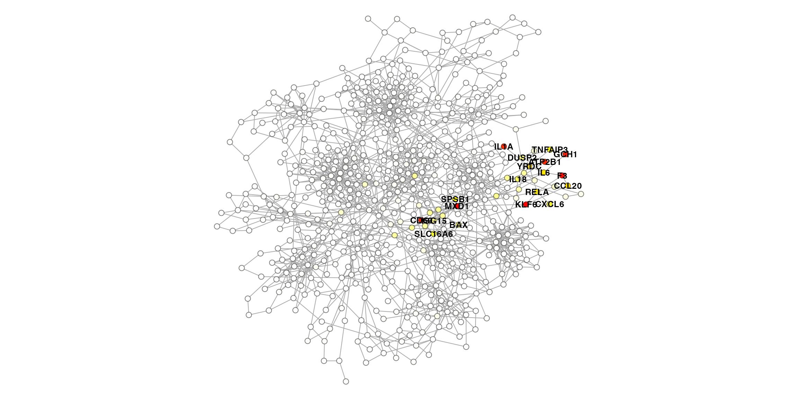

Using similar methods, we can take a pre-defined signature, and contextualize it based on the existing network structure. We can see which signature genes are present in the network, which signature genes are most central, or which non-signature genes are within close proximity.
Let’s pretend our signature happened to be a bunch of genes from one of our simulated communities…
signature <- c("ATP2B1", "KLF6", "IL1A", "CD69", "GCH1", "MXD1", "F3")Here you are passing in node symbols. The symbols are mapped to the unique node identifiers which is what are used for network propagation. That means if you have unique nodes multi-mapping to non-unique gene symbols, you’ll will have multiple propagation values for duplicated symbols.
ig.s <- extend_signature(ig, signature, restart=0.5)
head(igraph::as_data_frame(ig.s, what="vertices")) community color symbol name p pcolor
GMPS 8 #3E134F GMPS GMPS 0.000000e+00 #FFFFFE
PDLIM1 15 #9A9800 PDLIM1 PDLIM1 9.237848e-06 #FFFFFE
JUNB 15 #9A9800 JUNB JUNB 4.535853e-06 #FFFFFE
RER1 17 #50E2BB RER1 RER1 7.462290e-06 #FFFFFE
ICAM1 14 #A96C00 ICAM1 ICAM1 2.645026e-05 #FFFFFE
NPFFR2 14 #A96C00 NPFFR2 NPFFR2 1.778050e-06 #FFFFFEHere we can visualize the propagation throughout the network from the signature.
par(mar=c(0,0,0,0))
plot(ig.s,
vertex.size=4,
vertex.color=V(ig.s)$pcolor,
vertex.label=NA,
edge.width=1,
layout=layout)
Here we return the new signature based on the ranked propagation from the original signature.
df <- ig.s %>%
igraph::as_data_frame(what="vertices") %>%
dplyr::arrange(desc(p)) %>%
dplyr::mutate(np=normalize_range(p, 0, 1)) %>%
dplyr::select(symbol, p, np) %>%
dplyr::mutate(original_signature = symbol %in% signature)
head(df, 10) symbol p np original_signature
KLF6 KLF6 0.09076717 1.0000000 TRUE
MXD1 MXD1 0.08970336 0.9882798 TRUE
F3 F3 0.08768029 0.9659912 TRUE
GCH1 GCH1 0.08309481 0.9154722 TRUE
CD69 CD69 0.08086103 0.8908621 TRUE
ATP2B1 ATP2B1 0.07985923 0.8798251 TRUE
IL1A IL1A 0.07906760 0.8711036 TRUE
CCL20 CCL20 0.03224921 0.3552960 FALSE
YRDC YRDC 0.03119150 0.3436430 FALSE
IL6 IL6 0.02915137 0.3211665 FALSE
extended_signature <- df %>%
dplyr::select(symbol, np) %>%
tibble::deframe()
head(extended_signature, 15) KLF6 MXD1 F3 GCH1 CD69 ATP2B1 IL1A CCL20
1.0000000 0.9882798 0.9659912 0.9154722 0.8908621 0.8798251 0.8711036 0.3552960
YRDC IL6 RELA SPSB1 TNFAIP3 SLC16A6 CXCL6
0.3436430 0.3211665 0.3146207 0.2589525 0.2437994 0.2089514 0.2035255 The original signature will likely have the most propagation values (because that is the seed), but we can find other genes with high propagation values close to the signature within the network.
p <- df %>%
dplyr::filter(!original_signature) %>%
head(25) %>%
dplyr::mutate(name=factor(symbol, levels=symbol)) %>%
ggplot(aes(x=name, y=np, fill=p)) +
geom_bar(stat="identity") +
labs(x="Extended Symbols", y="Normalized Propogation") +
scale_fill_viridis_c() +
theme_classic() +
theme(axis.text.x=element_text(angle=45, vjust=1, hjust=1))
p
par(mar=c(0,0,0,0))
plot(ig.s,
vertex.size=3,
vertex.color=V(ig.s)$pcolor,
vertex.frame.color=adjustcolor("#000000", alpha.f=0.5),
vertex.label=ifelse(V(ig.s)$p > 0.01, V(ig.s)$symbol, NA),
vertex.label.family="Helvetica",
vertex.label.color="black",
vertex.label.font=2,
vertex.label.cex=0.8,
edge.width=1,
layout=layout)